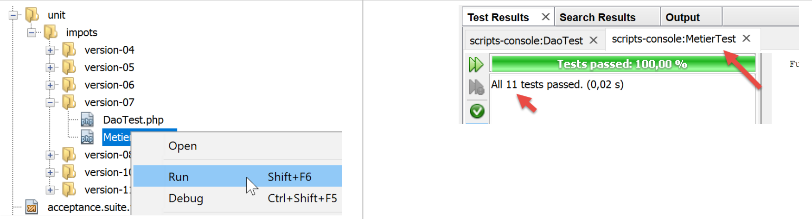

15. Exercício de aplicação – Versão 7

15.1. Implementação
Aqui, vamos rever a versão 6, movendo as constantes utilizadas nos scripts principais para um ficheiro de configuração. O ficheiro de configuração será um ficheiro JSON com o seguinte conteúdo:
{
"rootDirectory": "C:/Data/st-2019/dev/php7/poly/scripts-console/impots/version-07",
"databaseFilename": "Data/database.json",
"taxAdminDataFileName": "Data/taxadmindata.json",
"taxPayersDataFileName": "Data/taxpayersdata.json",
"resultsFileName": "Data/results.json",
"errorsFileName": "Data/errors.json",
"dependencies": {
"BaseEntity": "/../version-05/Entities/BaseEntity.php",
"TaxAdminData": "/../version-05/Entities/TaxAdminData.php",
"TaxPayerData": "/../version-05/Entities/TaxPayerData.php",
"Database": "/../version-05/Entities/Database.php",
"ExceptionImpots": "/../version-05/Entities/ExceptionImpots.php",
"Utilitaires": "/../version-05/Utilities/Utilitaires.php",
"InterfaceDao": "/../version-05/Dao/InterfaceDao.php",
"TraitDao": "/../version-05/Dao/TraitDao.php",
"InterfaceDao4TransferAdminData2Database": "/../version-05/Dao/InterfaceDao4TransferAdminData2Database.php",
"DaoTransferAdminDataFromJsonFile2Database": "/../version-05/Dao/DaoTransferAdminDataFromJsonFile2Database.php",
"DaoImpotsWithTaxAdminDataInDatabase": "/../version-05/Dao/DaoImpotsWithTaxAdminDataInDatabase.php",
"InterfaceMetier": "/../version-05/Métier/InterfaceMetier.php",
"Metier": "/../version-05/Métier/Metier.php"
},
"dependencies4calculate": [
"BaseEntity",
"TaxAdminData",
"TaxPayerData",
"Database",
"ExceptionImpots",
"Utilitaires",
"InterfaceDao",
"TraitDao",
"DaoImpotsWithTaxAdminDataInDatabase",
"InterfaceMetier",
"Metier"],
"dependencies4transfer": [
"BaseEntity",
"TaxAdminData",
"Database",
"ExceptionImpots",
"Utilitaires",
"InterfaceDao",
"TraitDao",
"InterfaceDao4TransferAdminData2Database",
"DaoTransferAdminDataFromJsonFile2Database"]
}
Nesta configuração:
- linha 2: o diretório a partir do qual todos os caminhos neste ficheiro de configuração são medidos;
- linhas 3–7: os caminhos para todos os ficheiros JSON na aplicação;
- linhas 8–22: os caminhos para todos os ficheiros da aplicação, no formato [chave=>caminho];
- linhas 23–34: as dependências para o cálculo de impostos na forma de uma lista de chaves do dicionário [dependencies] (linhas 8–22);
- linhas 35–44: dependências para a transferência do ficheiro JSON [taxadmindata.json] para a base de dados, na forma de uma lista de chaves do dicionário [dependencies] (linhas 8–22);
O script para transferir dados de administração fiscal para a base de dados [MainTransferAdminDataFromFile2PostgresSQLDatabase.php] fica da seguinte forma:
<?php
// strict adherence to declared types of function parameters
declare (strict_types=1);
// namespace
namespace Application;
// error handling by PHP
// ini_set("display_errors", "0");
//
// configuration file path
define("CONFIG_FILENAME", "../Data/config.json");
// we retrieve the configuration
$config = \json_decode(\file_get_contents(CONFIG_FILENAME), true);
// include the necessary script dependencies
$rootDirectory = $config["rootDirectory"];
foreach ($config["dependencies4transfer"] as $dependency) {
require $rootDirectory . $config["dependencies"][$dependency];
}
// definition of constants
define("DATABASE_CONFIG_FILENAME", "$rootDirectory/{$config["databaseFilename"]}");
define("TAXADMINDATA_FILENAME", "$rootDirectory/{$config["taxAdminDataFileName"]}");
//
try {
// creation of the [dao] layer
$dao = new DaoTransferAdminDataFromJsonFile2Database(DATABASE_CONFIG_FILENAME, TAXADMINDATA_FILENAME);
// data transfer to the database
$dao->transferAdminData2Database();
} catch (ExceptionImpots $ex) {
// error is displayed
print $ex->getMessage() . "\n";
}
// end
print "Terminé\n";
exit;
Comentários
O código permanece o mesmo que na secção com o link. A única diferença é a utilização do ficheiro [config.json] em vez de constantes nas linhas 18–26;
- linha 16: a função [file_get_contents] transfere o ficheiro [config.json] para uma cadeia de caracteres. A função [json_decode] utiliza então esta cadeia de caracteres para construir o dicionário [$config]. O segundo parâmetro [true] da função [json_decode] indica que pretendemos construir um dicionário;
- linhas 19–22: incluímos as dependências necessárias para que o script transfira dados do ficheiro [taxadmindata.json] para a base de dados;
- [$config["dependencies4transfer"]] é a matriz de dependências necessárias ao script de transferência. Trata-se de uma lista de chaves. Os caminhos dos ficheiros a incluir no projeto encontram-se no dicionário [$config["dependencies"]];
- $config["rootDirectory"] representa o caminho com o qual os ficheiros a incluir devem ser prefixados;
Da mesma forma, o script de cálculo de impostos passa a ser o seguinte [MainCalculateImpotsWithTaxAdminDataInPostgresDatabase]:
<?php
// strict adherence to declared types of function parameters
declare (strict_types=1);
// namespace
namespace Application;
// error handling by PHP
// ini_set("display_errors", "0");
//
// configuration file path
define("CONFIG_FILENAME", "../Data/config.json");
// we retrieve the configuration
$config = \json_decode(\file_get_contents(CONFIG_FILENAME), true);
// include the necessary script dependencies
$rootDirectory = $config["rootDirectory"];
foreach ($config["dependencies4calculate"] as $dependency) {
require $rootDirectory . $config["dependencies"][$dependency];
}
// definition of constants
define("DATABASE_CONFIG_FILENAME", "$rootDirectory/{$config["databaseFilename"]}");
define("TAXPAYERSDATA_FILENAME", "$rootDirectory/{$config["taxPayersDataFileName"]}");
define("RESULTS_FILENAME", "$rootDirectory/{$config["resultsFileName"]}");
define("ERRORS_FILENAME", "$rootDirectory/{$config["errorsFileName"]}");
//
try {
// creation of the [dao] layer
$dao = new DaoImpotsWithTaxAdminDataInDatabase(DATABASE_CONFIG_FILENAME);
// creation of the [business] layer
$métier = new Metier($dao);
// tax calculation in batch mode
$métier->executeBatchImpots(TAXPAYERSDATA_FILENAME, RESULTS_FILENAME, ERRORS_FILENAME);
} catch (ExceptionImpots $ex) {
// error is displayed
print "Une erreur s'est produite : " . utf8_encode($ex->getMessage()) . "\n";
}
// end
print "Terminé\n";
exit;
15.2. Testes [Codeception]
Esta versão, tal como as anteriores, é validada por testes [Codeception].

15.2.1. Testes da camada [DAO]
O teste [DaoTest.php] é o seguinte:
<?php
// strict adherence to declared function parameter types
declare (strict_types=1);
// namespace
namespace Application;
// defining constants
define("ROOT", "C:/Data/st-2019/dev/php7/poly/scripts-console/impots/version-07");
// configuration file path
define("CONFIG_FILENAME", ROOT."/Data/config.json");
// we retrieve the configuration
$config = \json_decode(\file_get_contents(CONFIG_FILENAME), true);
// include the necessary script dependencies
$rootDirectory = $config["rootDirectory"];
foreach ($config["dependencies4calculate"] as $dependency) {
require $rootDirectory . $config["dependencies"][$dependency];
}
// other constants
define("DATABASE_CONFIG_FILENAME", "$rootDirectory/{$config["databaseFilename"]}");
// test -----------------------------------------------------
class DaoTest extends \Codeception\Test\Unit {
// TaxAdminData
private $taxAdminData;
public function __construct() {
parent::__construct();
// creation of the [dao] layer
$dao = new DaoImpotsWithTaxAdminDataInDatabase(DATABASE_CONFIG_FILENAME);
$this->taxAdminData = $dao->getTaxAdminData();
}
// tests
public function testTaxAdminData() {
…
}
}
Comentários
- linhas 9–21: definição do ambiente de teste. Utilizamos o mesmo ambiente, sem a camada [de negócios], que o utilizado pelo script principal [MainCalculateImpotsWithTaxAdminDataInPostgresDatabase] descrito na secção com o link;
- linhas 29–34: construção da camada [dao];
- linha 33: o atributo [$this→taxAdminData] contém os dados a serem testados;
- Linhas 37–39: O método [testTaxAdminData] é aquele descrito na secção indicada no link;
Os resultados do teste são os seguintes:

15.2.2. Teste da camada [Business]
O teste [MetierTest.php] é o seguinte:
<?php
// strict adherence to declared types of function parameters
declare (strict_types=1);
// namespace
namespace Application;
// defining constants
define("ROOT", "C:/Data/st-2019/dev/php7/poly/scripts-console/impots/version-07");
// configuration file path
define("CONFIG_FILENAME", ROOT . "/Data/config.json");
// we retrieve the configuration
$config = \json_decode(\file_get_contents(CONFIG_FILENAME), true);
// include the necessary script dependencies
$rootDirectory = $config["rootDirectory"];
foreach ($config["dependencies4calculate"] as $dependency) {
require $rootDirectory . $config["dependencies"][$dependency];
}
// other constants
define("DATABASE_CONFIG_FILENAME", "$rootDirectory/{$config["databaseFilename"]}");
// test class
class MetierTest extends \Codeception\Test\Unit {
// business layer
private $métier;
public function __construct() {
parent::__construct();
// creation of the [dao] layer
$dao = new DaoImpotsWithTaxAdminDataInDatabase(DATABASE_CONFIG_FILENAME);
// creation of the [business] layer
$this->métier = new Metier($dao);
}
// tests
public function test1() {
…
}
-----------------------------------
public function test11() {
…
}
}
Comentários
- linhas 9–21: definição do ambiente de teste. Utilizamos o mesmo que o script principal [MainCalculateImpotsWithTaxAdminDataInPostgresDatabase] descrito na secção com o link;
- linhas 28–34: construção da camada [dao];
- linha 33: o atributo [$this→business] é uma referência à camada [business] a ser testada;
- linhas 37–45: os métodos [test1, test2…, test11] são os descritos na secção em link;
Os resultados do teste são os seguintes:
